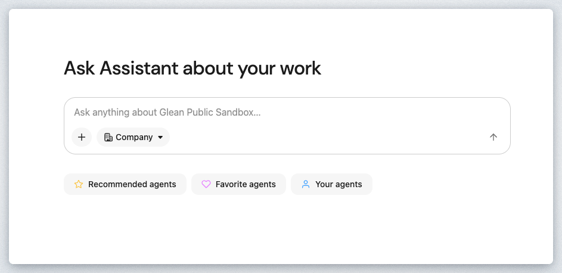
Glean Assistantは、Gleanの生成AI製品群の一部です。社内の知識豊富な同僚と同様に機能するよう設計されており、企業の知識と業務グラフに基づいてパーソナライズされた回答を提供します。
アシスタントとの主な接点はGlean Chatであり、ユーザーは同僚に相談するように質問し回答を得られます。この機能は組織の集合知を活用し、プロジェクトの要約、専門家の特定、関心事項の最新情報提供など、様々なタスクを支援することを目的としています。
Go to https://app.glean.com/chat.
Gleanはログインが必要なサービスであり、今回が初めてのアクセスとなりますため、Gleanのログインページへリダイレクトされます。既にログイン済みの場合は、次のステップへお進みください。
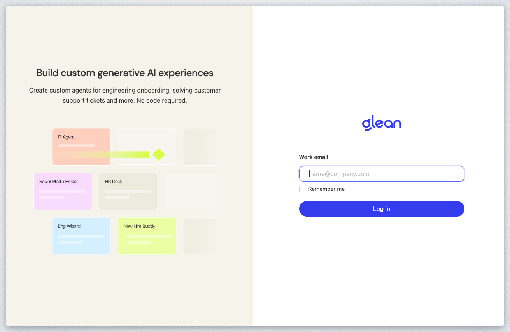
ワークショップモデレーターから提供された認証情報を入力してください。まず、メールアドレスを「仕事用メールアドレス」欄に入力し、「ログイン」ボタンをクリックしてください。
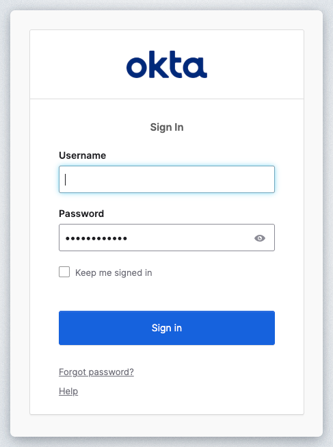
以下のような画面が表示されます。ワークショップモデレーターから提供されたパスワードを入力し、「サインイン」ボタンをクリックしてください。その後、Glean Assistantに戻ります。
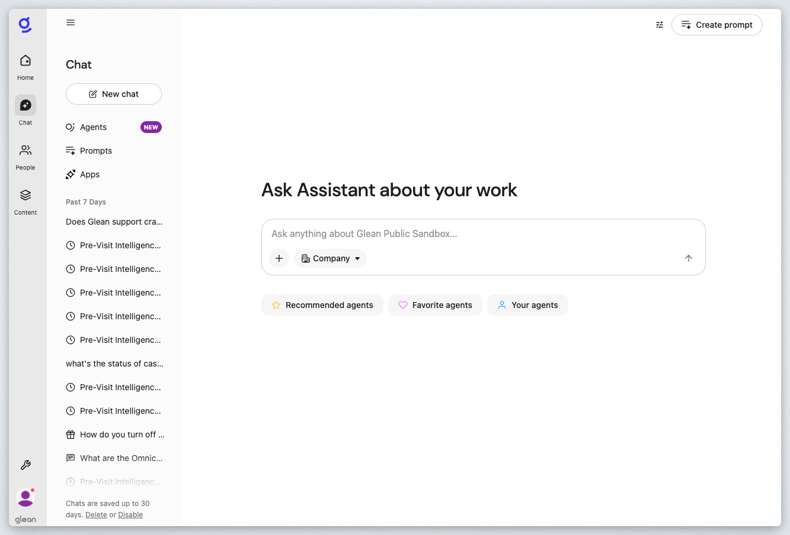
ここから、ChatGPTと同様の会話インターフェースを通じて、御社のデータとやり取りできます。
これは本ワークショップ用に設定されたGleanのプライベートサンドボックスインスタンスであり、様々なデータソースが接続・インデックス化されています。これには以下が含まれますが、これらに限定されません：
インターフェースから、Glean アシスタントとの会話を一から開始できることがわかります。
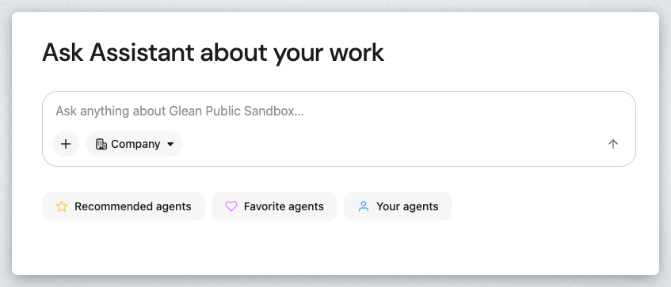
次のセクションでは、Glean Chatとの最初の会話を始めます。下の「次へ」をクリックしてください。
Glean Chatが、Gleanプラットフォーム内でのクロール/インデックスの仕組みを理解するのに役立つかどうか見てみましょう。
左側のナビゲーションバーからチャットのアイコンをクリックしてください。
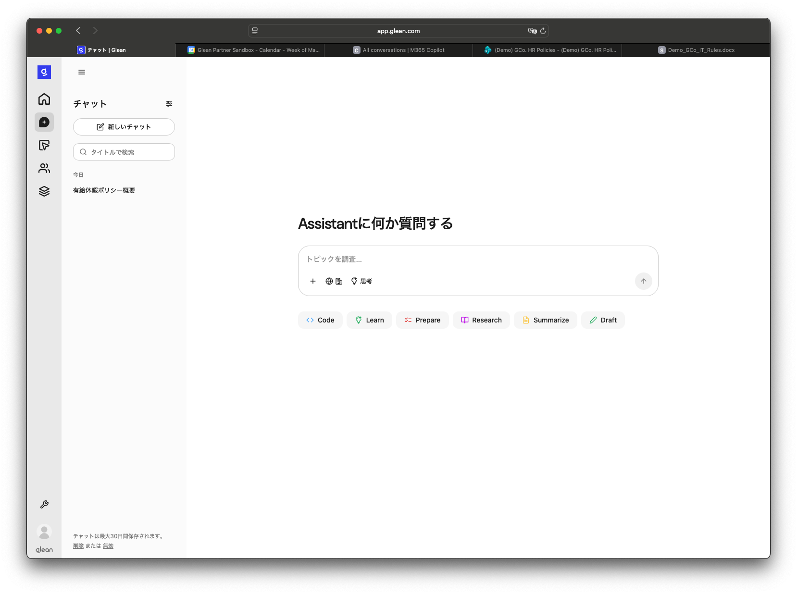
Glean Chatでどんなことができるかを探索してみましょう。左下のプラスボタンを押します。
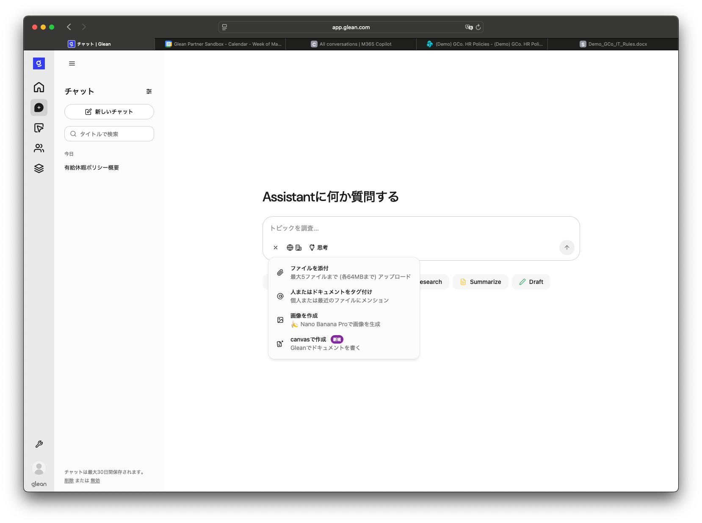
次に「🌏」、「🏙️」のアイコンを押してください。ウェブから検索するか、会社のデータを検索するか、両方を利用するかを選択することができます。
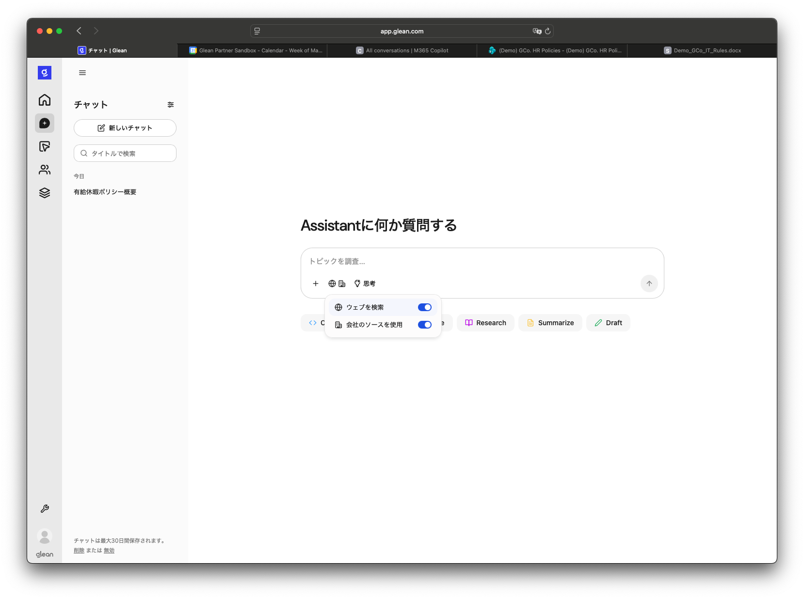
次に「思考」を押して、「モデル」を押してください。LLMのモードを切り替えることができます。
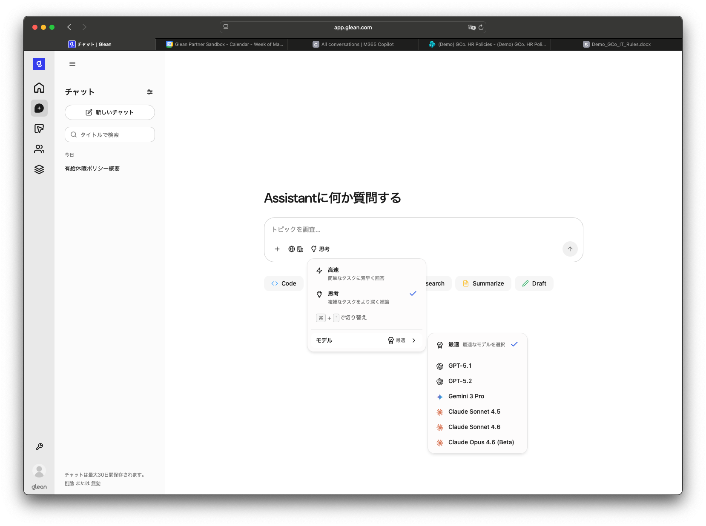
会話ウィンドウに以下を入力し、Enterキーを押す をクリックしてください。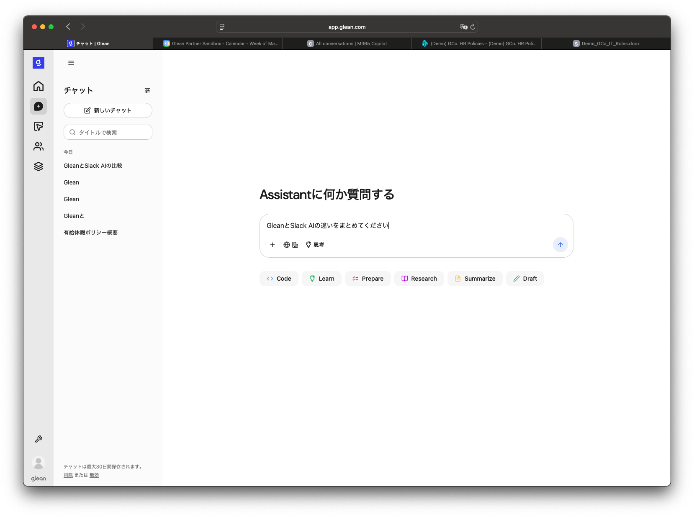
Gleanアシスタントは、バックグラウンドで以下の処理を実行します：
生成が完了したら、インターフェースに戻ってナビゲートし、上記ステップ2で示したフローを確認しましょう。
質問のすぐ下に、実行された検索クエリと読み込まれたドキュメントが表示されます。以下のような内容が表示されるはずです。クエリに基づいてGleanが実行したステップを確認するには、「作業を表示」の横にある矢印をクリックして展開する必要がある場合があります。
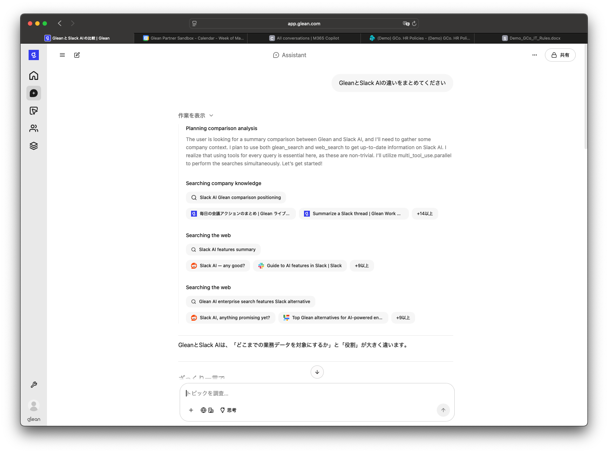
Glean Assistantの思考モードでは、「作業を表示」セクションを展開することで、AIがどのように回答を導き出したかのプロセスを確認できます。この例では、「GleanとSlack AIの違いをまとめてください」という質問に対し、AIがまず社内ナレッジの検索（Searching company knowledge）を行い、次にWeb検索（Searching the web）を複数回実行して、社内外の情報を横断的に収集しています。
Gleanは、社内のConfluenceやSharePointなどの接続済みソースアプリケーションからの情報と、外部のWeb情報を組み合わせて、より包括的で正確な回答を生成します。各検索で取得されたソースドキュメント（例：「毎日の会議アクションのまとめ | Glean ライブ...」「Guide to AI features in Slack」など）はクリック可能で、直接ソースへ移動して詳細を確認できます。
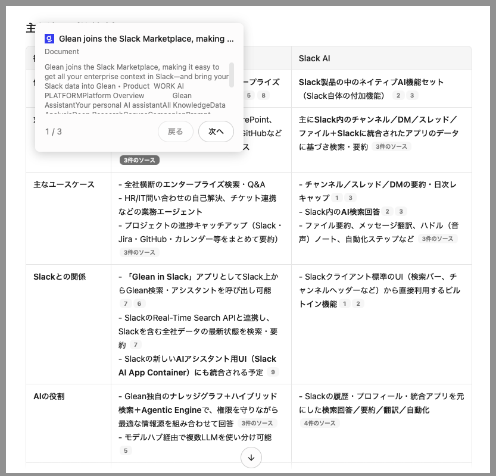
もし引用元が組織内のユーザーが作成した文書であれば、著者が表示され、著者リンクをクリックして詳細を確認できます。 今回は公開サイト（help.glean.com および developers.glean.com）からクロールされた引用であるため、著者は表示されません。
ただし公開文書であることから、信頼できる著作者であると推測できます。
会話ウィンドウに次のフォローアップ質問を入力してください：
会話が継続します。新しい応答の文脈は、前の質問/回答を考慮して知識クエリを絞り込みます。フォローアップ質問の直下に、検索が文脈を記憶し、その文脈をエンタープライズ検索に活用して新しい結果を生成したことが確認できます：
高度に関連性の高いデータを用いたLLM生成の威力を示すため、上記の情報を表形式でメール作成するようGlean Assistantに依頼してみましょう。
会話ウィンドウに以下を入力してください：
(実際の名前を入力し、括弧も削除してください）。画面は以下のように表示されるはずです：
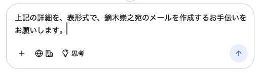
返答は、お好みのメールプログラムにコピー＆ペーストできる表形式の返信となります。このGleanのインスタンスでは、Gmailと直接連携する設定が可能です。Microsoftソリューションをご利用のお客様には、Outlookとの連携も可能です。
データは以下のような形式になる場合があります。canvasの機能を活用することで直接編集、AIで編集を行う子ができます。また、右上のActionsからメールとして下書き保存することが可能です。
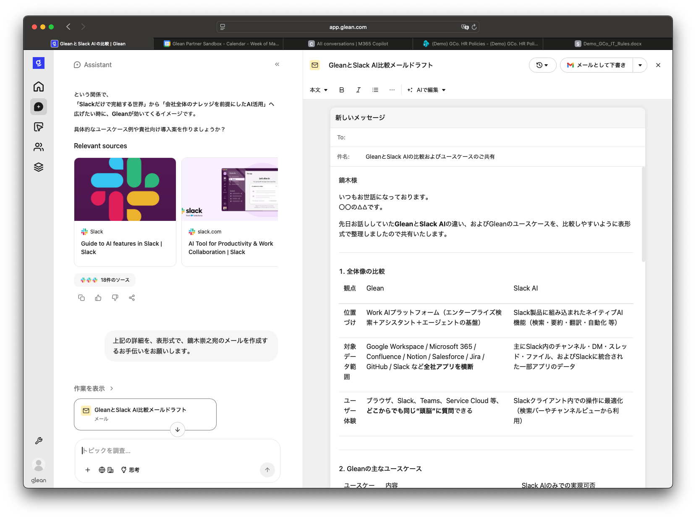
Gleanが提供する世界トップクラスのエンタープライズ向けアウトオブザボックス（OOTB）検索拡張生成（RAG）アーキテクチャとLLMの機能を組み合わせることで、ユーザーに極めて高い価値を提供できることがお分かりいただけるでしょう。
このようにGleanを利用することでデータの検索、回答の生成、その回答をもとにしたメールやドキュメントの生成と編集、さらにその内容をメールやドキュメントとして出力するといったActionを行うことが可能です。
チャットボックスのプラス記号「+」をクリックすると、いくつかのオプションが表示されます。
「➕」をクリックして「画像を生成」を選択して、以下のプロンプトを入力してください。
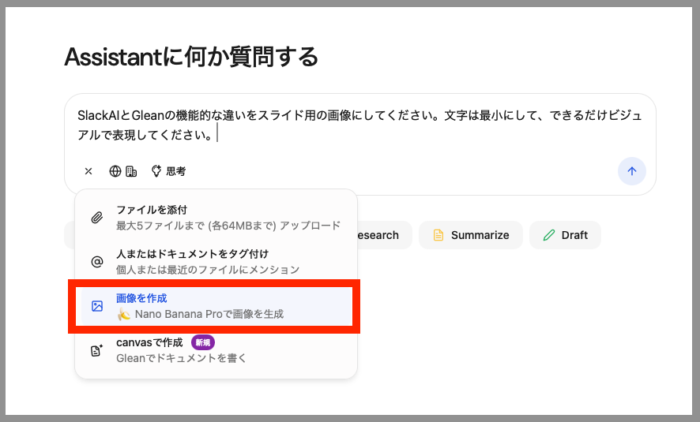
Googleの画像生成モデルNano Banana Pro（Gemini 3 Pro Image）を搭載しています。
自然言語のプロンプトで画像を生成でき、ドラフト、ダイアグラム、SNS投稿用のビジュアルなどを素早く作成できます。
最大の特徴は、社内ドキュメントなどのエンタープライズコンテキストをプロンプトに組み込めるため、ChatGPTなどの汎用ツールとは異なり、社内情報に基づいたデザイン指示が可能な点です。
高速モード・思考モードの両方で利用可能で、生成された画像の編集や反復的な改善にも対応しております。何度かやり取りをして画像をブラッシュアップしてみてください。
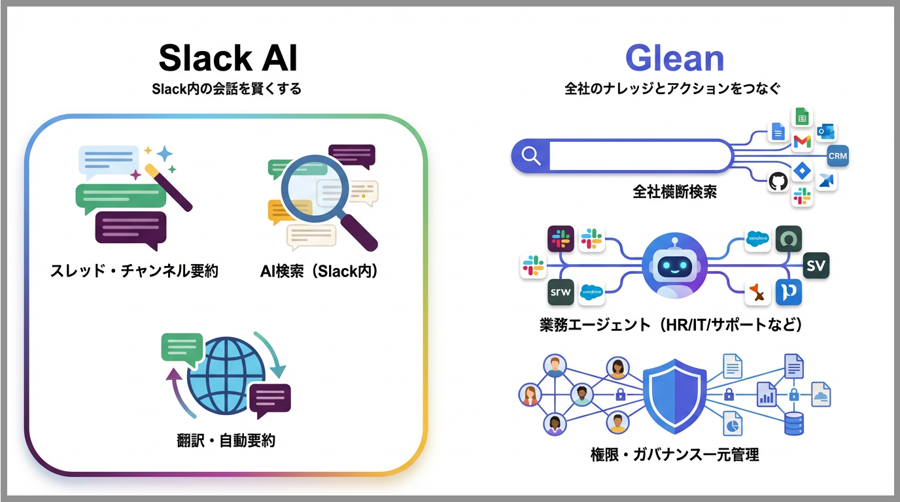
「➕」をクリックして「画像を生成」を選択して、以下のプロンプトを入力してください。
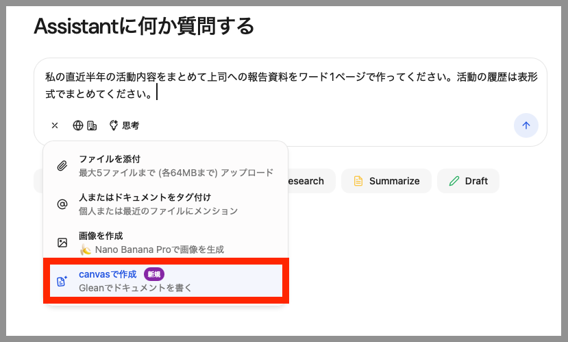
Gleanのcanvasで作成機能は、自然言語のプロンプトを入力することで、AIが編集可能なドキュメントをCanvas形式で生成する機能です。
この例では「私の直近半年の活動内容をまとめて上司への報告資料をワード1ページで作ってください。活動の履歴は表形式でまとめてください。」というプロンプトを入力しており、Gleanが社内の活動データ（検索履歴・チャット履歴・ドキュメント作成履歴など）を基に、報告資料をCanvasで自動生成します。
生成されたドキュメントはCanvas上でそのまま編集・修正でき、完成後はGoogle DocsやGmail、Wordなどにワンクリックでエクスポートできます。
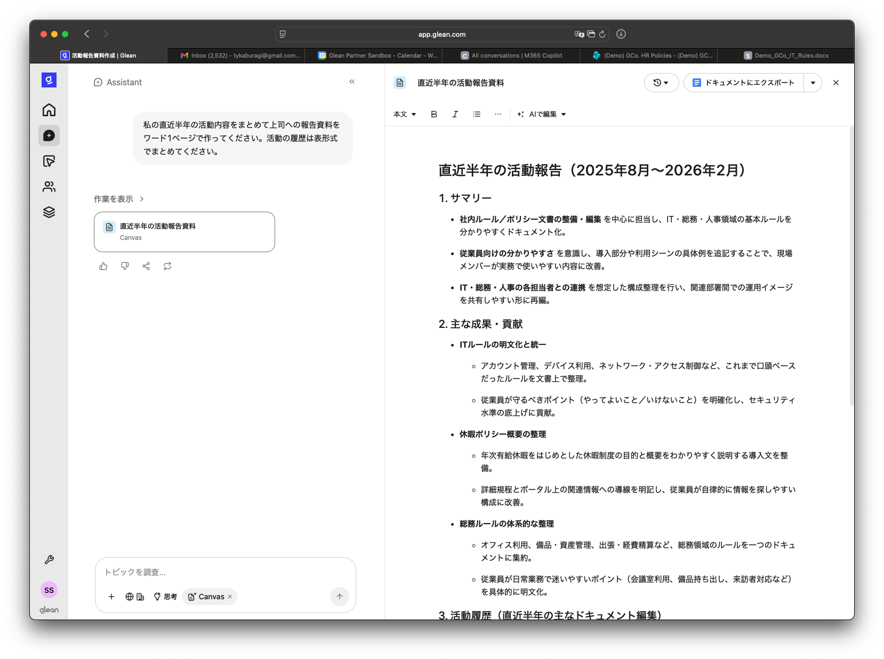
修正してみましょう。もし最初に生成した資料に箇条書きがない場合はご自身で修正案を自由に作ってみてください。
指示通りに修正されるはずです。
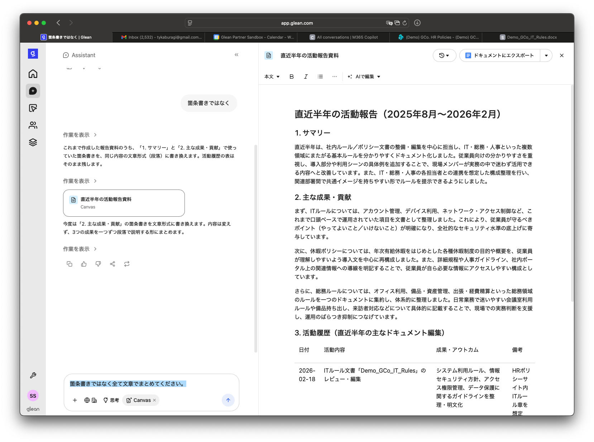
次にAIで編集から各メニューを探索してみてください。自由に選択してAIで編集の機能を試してください。
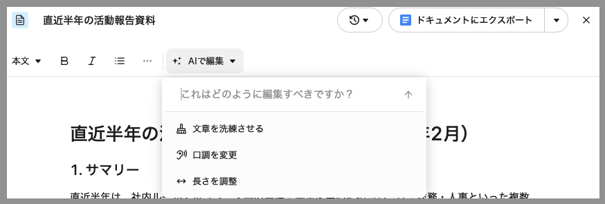
作成したドキュメントはワードやメール、パワーポイントにエクスポートすることが可能です。
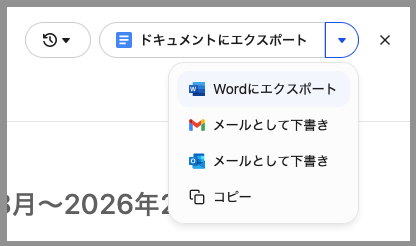
このように、Glean Canvasではプロンプトを入力するだけで社内の活動データを基にドキュメントが自動生成され、生成後も「AIで編集」機能を使って文章の洗練・口調の変更・長さの調整といった修正をワンクリックで行うことができます。
完成したドキュメントはWordへのエクスポート、GmailやOutlookでのメール下書き、コピーなど、複数の形式で出力可能なため、ツールを切り替えることなくGlean上で資料作成から共有までを一気通貫で完結できます。
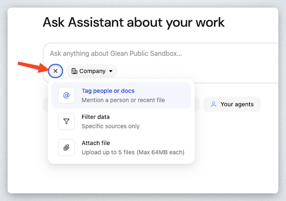
「人またはドキュメントをタグ付け」を選択してください。これによりチャットボックスに@記号が挿入され、Glean Assistantとの会話に、クロールまたはインデックス化された人物やドキュメントを含めることができます。
@記号の後に"See all results for" を入力して、選択して下さい。(see .. と入力すると自動で下記のアイコンが出てくるはずです。)
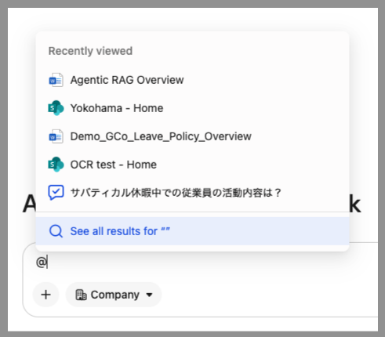
"Salesforce Connector"で検索を行い、ドキュメントを "+Add" で追加してください。
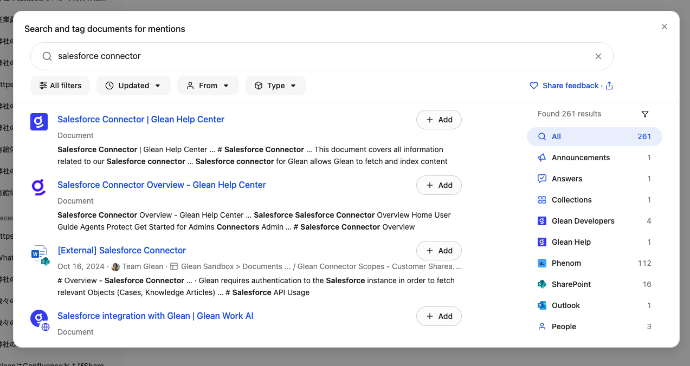
次に、@記号の後に以下を入力し、最初の結果を選択してください
チャットボックスは下記のようになります。送信ボタンをクリックして応答を確認してください。
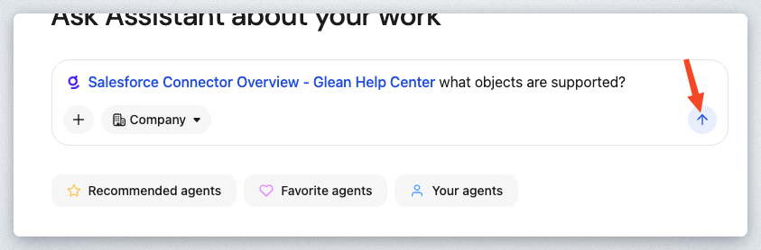
ご覧の通り、Gleanではチャットの文脈を特定のリソースに絞り込むことが可能です。
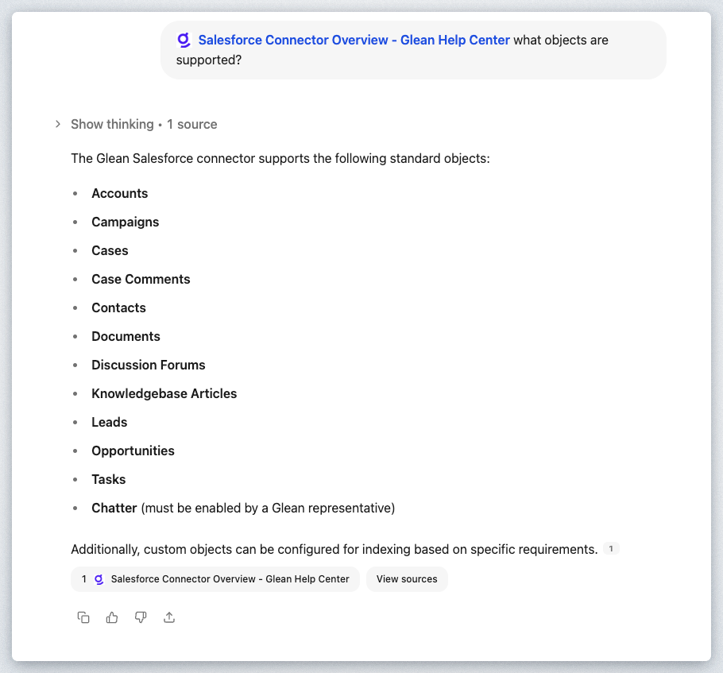
コンテンツは既にクロールされインデックス化されているため、文書をアップロードする手間が省け、貴重な時間を節約できます。
ファイル添付オプションについて学びましょう。現在のチャットセッションを使用するか、新しいセッションを開始できます。
Glean Assistantとの会話を開始する前に、使用するファイルを用意しましょう。
この実習では、こちらのリンクを右クリックし「リンク先をファイルに保存...」を選択してダウンロードできます。保存場所を必ず覚えておいてください。
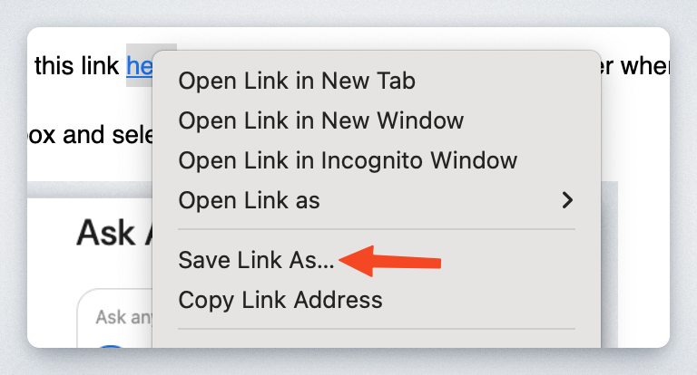
次に、チャットボックスのプラス記号「+」をクリックし、「ファイルを添付」オプションを選択します。
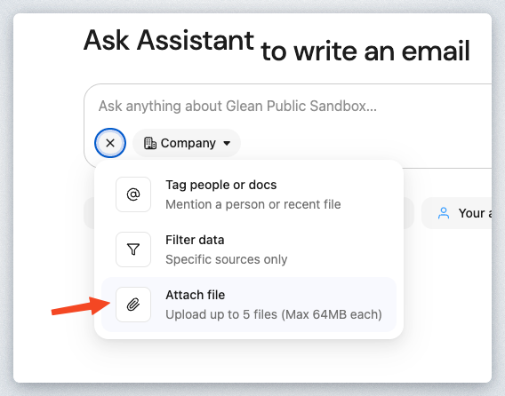
ダウンロードしたファイルを探し、アップロード対象として選択してください。ファイルのアップロードが完了したら、以下を入力し「送信」をクリックしてください。
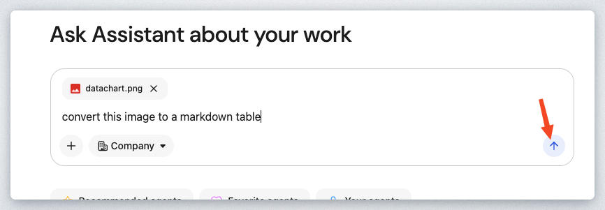
Glean Assistantからの応答は、以下のようになります。
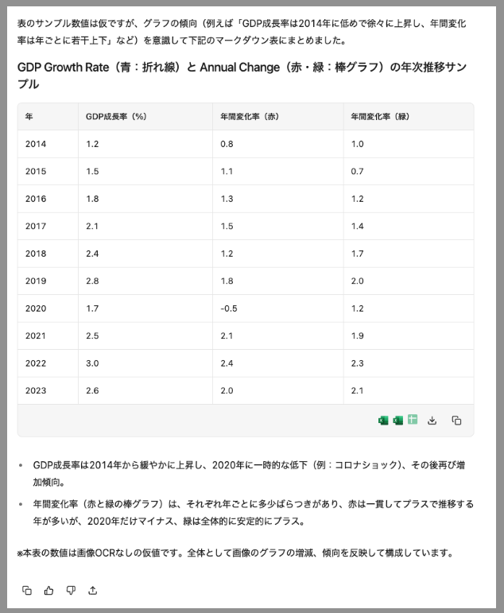
ファイルを添付することで、Gleanがまだクロールまたはインデックス化していないコンテンツを使用してGlean Assistantと会話できます。最大64MBのファイルを5つまでアップロード可能です。対応ファイル形式の一覧はこちらでご確認いただけます。
話題を変えて、人事関連の問題に関するクエリを実行してみましょう。架空の企業向けに作成した数種類の模擬文書が、人事関連方針を含む社内規定を中心にインデックス化されています。これらの文書に関連する質問をしてみましょう。
画面左上の「新規チャット」ボタンをクリックすると、これまでの会話履歴がすべて消去され、新しい会話を開始できます。
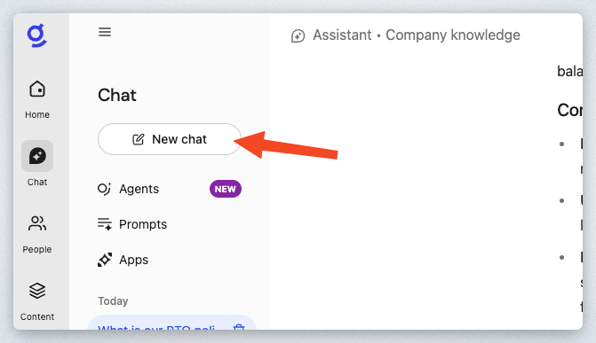
以下のテキストを、以下に示す例のように会話ウィンドウに入力してください：
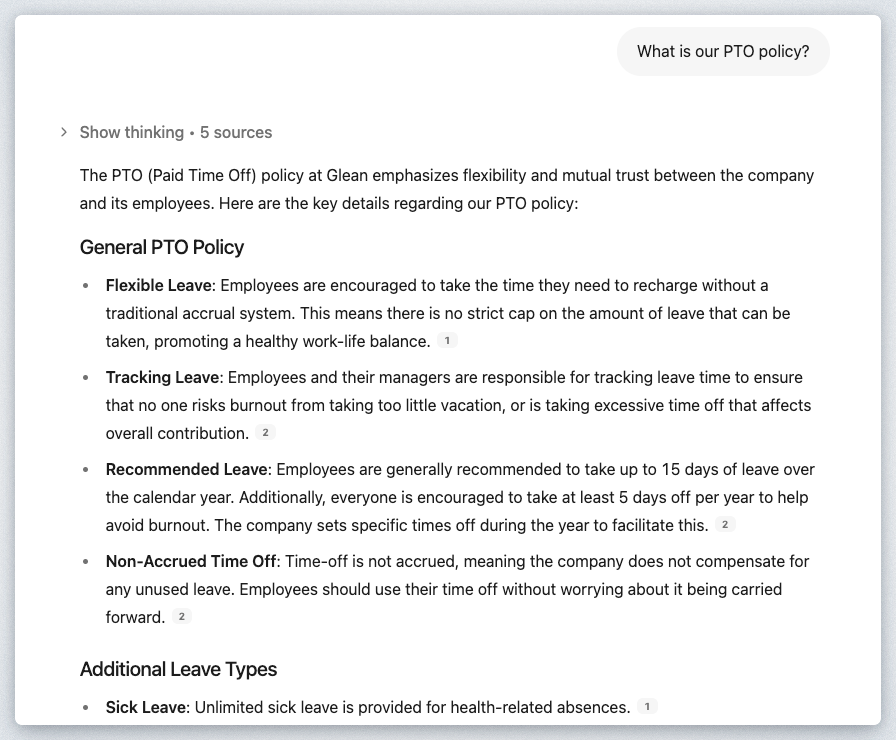
では、次の質問をしてみましょう：
結果に注目してください...
「現時点の社内ドキュメント（福利厚生ガイド、PTO・有給休暇ポリシー、FAQ、および従業員ハンドブック）には、「ブラックアウト期間」や「繁忙期」の取得制限についての明確な記載は見つかりませんでした。」
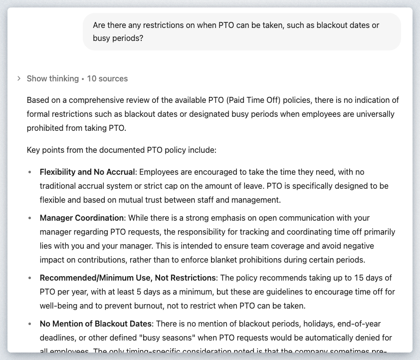
プラットフォームが質問に適切に回答できなかったように見えますが、実際には非常に正確であり、お客様がプラットフォームで享受してきた点でもあります。Gleanプラットフォームは、ブラックアウト期間や繁忙期について明示的に言及した文書が存在しない場合に、推測で回答を「幻視」したわけではありません。代わりに、このトピックについて言及した文書が存在しないことを明確に述べ、お客様に提案される次のステップを提供しました。
このケースでは、人事部門がこの質問を受け取り、このような質問に答える文書が存在しないことを認識します。これは人事ポリシー文書の改訂版を作成することで容易に修正可能です。
この会話の最初の質問までスクロールしてください。
アシスタントがPTOポリシーの質問に答えるために様々な文書を読んだことがわかります。「Reading」セクションで「(Demo) CGo. 休暇ポリシー概要.docx」という文書を探し、クリックして別のタブで開いてください。 以下の画像を参照してください（元のクエリの下にある「検索」部分を拡大して、検索内容と参照された文書を確認する必要がある場合があります）。
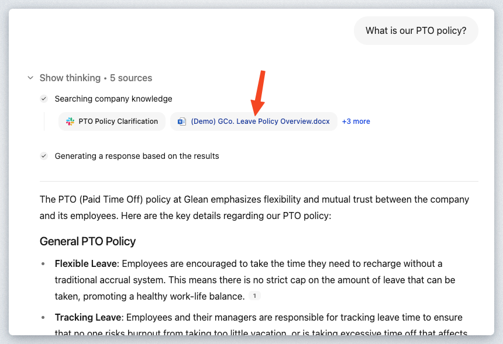
文書を精査し、特に「サバティカル休暇」の項目を参照してください。この段落がサバティカル休暇の条件について論じている一方で、従業員が休暇中に何を行うかについての文脈や選択肢を提供していない点に注目してください...
サバティカル休暇に関する正式な文書がこの点を扱っていないことがわかった以上、あえて質問を投げかけ、結果を見てみましょう。
会話ウィンドウに入力してください：
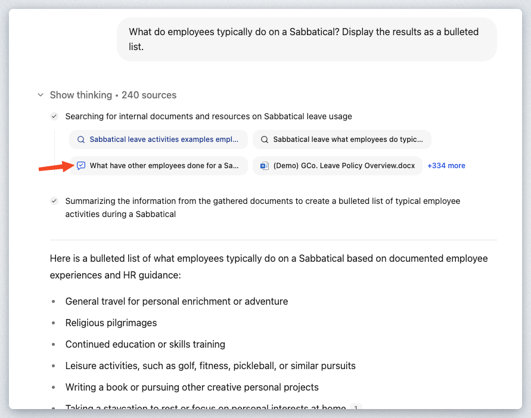
結果を生成するために読み込まれた文書の一つに、ダイアログボックスとチェックマークのアイコンが付いていることに注目してください。
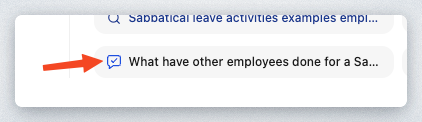
そのアイコンは、この特定の質問に対して作成された回答文書であることを示しています。なぜなら、社内コーパス内のどの文書にも、従業員がサバティカル休暇をどのように利用したかに関する情報が含まれていないためです（明らかに他の誰かが人事部に直接問い合わせたため、回答が作成されました）。
適切なロールを持つユーザーは手動で回答を作成できますが、プラットフォームはコンテンツのインデックス作成時に自動的に回答を生成することもあります。以下はGleanプラットフォームの社内本番環境における実際の会話例です（そう、Gleanは自社製品を自ら活用しています）。
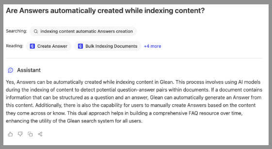
ご覧の通り、Gleanプラットフォームはインデックス作成時にAIモデルを活用し、社内のコーパス内に既に存在する一般的なFAQをサポートする回答を自動生成します。
先ほどのサバティカルに関する会話で、以下のように「回答引用」をクリックしてください：
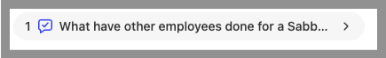
詳細については、作成された回答自体にリダイレクトされます。
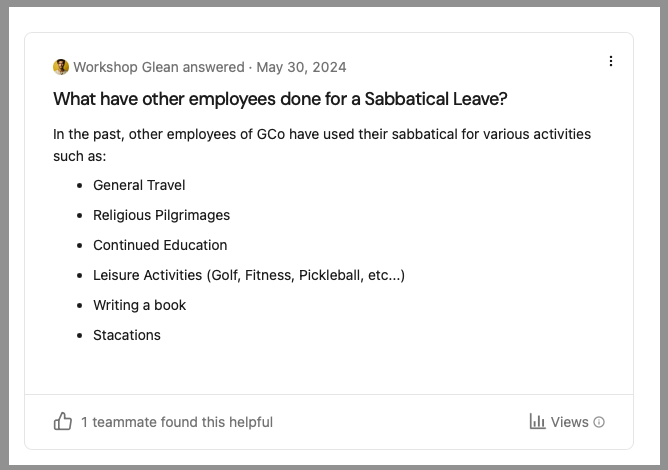
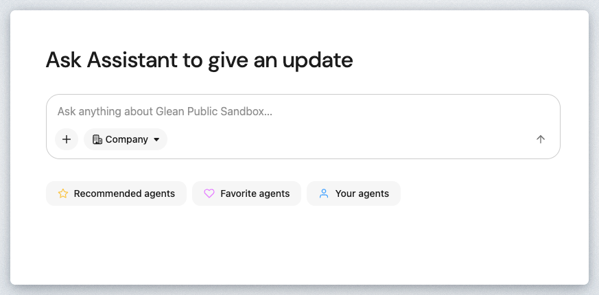
このラボでは、Glean Assistant がどのようにインテリジェントな AI 搭載の会話を通じてエンタープライズ知識へのアクセスを革新するかを、実際に体験しました。あなたは、Glean Chat を知識豊富な同僚のように扱い、自然言語で質問し、組織内でインデックス化されたコンテンツから正確かつ十分に根拠付けられた回答を受け取る方法を学びました。
ハンズオンでの探索を通じて、Glean の高度な Retrieval Augmented Generation（RAG）アーキテクチャの実際の動作をご覧いただきました。アシスタントがあなたのクエリをターゲットを絞ったエンタープライズ検索にシームレスに変換し、複数のやり取りを通じて会話の文脈を維持し、詳細な説明からビジネスコミュニケーション用の構造化された表まで、さまざまな形式で情報を提示する様子を体感できました。
人事ポリシーに関して調査した際、Glean の最も価値ある特徴のひとつである「憶測よりも正確性を重視する姿勢」が示されました。たとえば、会社のポリシーに記載されていないブラックアウト日について質問した場合、アシスタントは情報ギャップを率直に認め、答えを作り上げることはありませんでした。この誠実なアプローチと、一般的な質問に対する回答を自動生成できるプラットフォームの能力が組み合わさることで、Glean が組織の進化する知識ニーズに継続的に対応していることがわかります。
また、Glean が組織データとどのように統合されているかも探究し、同プラットフォームが単なるドキュメントへのアクセスにとどまらず、その背後にいる著者や専門家、チーム構成などの人にもつながれることを発見しました。特定のドキュメントや人物へのタグ付け、データソースによるフィルタリング、必要に応じたグローバル知識へのアクセスといった機能を通じて、Glean が従来の検索をはるかに凌駕した包括的なコンテキストを提供する方法を学びました。